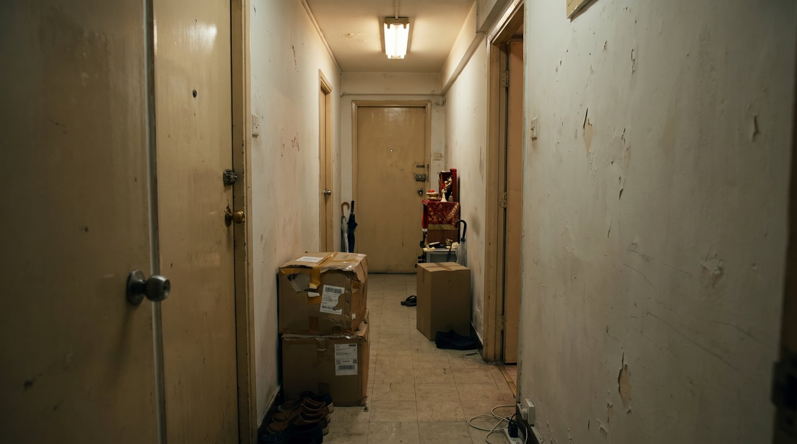 Blender锁运镜→AI视频 Dan Kieft · 教程 · 跨工具 2026-11-17 原标题：Claude + Blender Is The Best Way To Make AI Videos (Full Course)。先用 Blender 锁住镜头和空间，再交给生成模型出片，不是纯代码成片。 Claude 写提示词并做进阶 MCP 搭景。初学路线推荐 Opus 5.5，进阶用的型号没有写明。成片走 Higgsfield / Nano Banana Pro 锚点，再由 Seedance 2.5 生成。作者公开了配套提示词。课程含付费插件推广。本板未看完全片，也未复跑。 教程 提示词
Cat Garden BubbleBrain · Claude Fable 5.2 · 案例＋源码 2026-11-16 约 110 秒的猫眼高度花园。作者仓库写明代码由 Claude（claude-fable-5-2）在 Claude Code 里写成，画面和声音由这段代码计算，不是 Blender、Three.js 或视频生成。 低机位、步态和视线弹簧、曝光与声音绑在同一时间轴，并用抽样帧做检查。暂未找到公开的逐步复刻教程。只能在 Apple Silicon + Metal 上跑，Windows 不能直接运行。仓库没有 LICENSE，不能据此当作可改写或可商用。本板未看完全片，也未跑渲染脚本。 原片 源码 发布页 同集 Deep Dive 同集 Mountain Hike
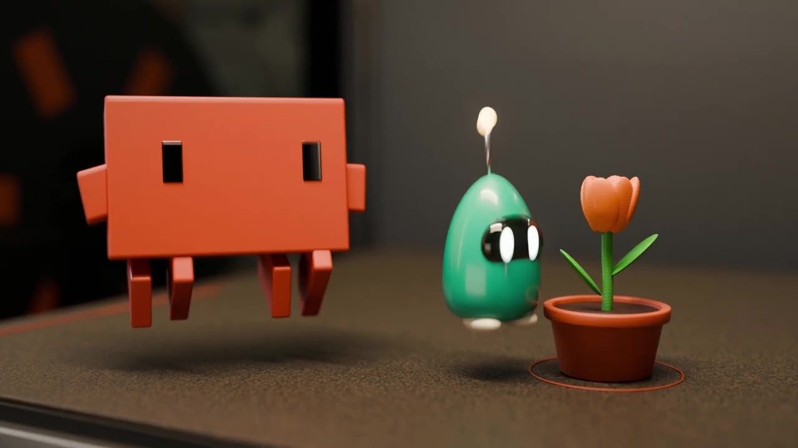 The Fable of Clawd Riley Brown · Claude Fable 5.2 · Python + Blender · 成片 · 制作拆解 2026-11-15 2 分 19 秒的动画短片：Clawd 给自己造身体，送出生日礼物。作者称 Fable 5.2 / Claude Code 写 Python，在 Blender 里出片，并用 RunPod 云渲染。制作拆解页有起始提示词、流程、渲染设置和 52 镜故事板，没有成片播放器，也没有可下载源码。 本板未复跑，也不把它当成已端到端核实的完整教程，未审片。时长来自页面元数据。 成片 制作拆解 原帖
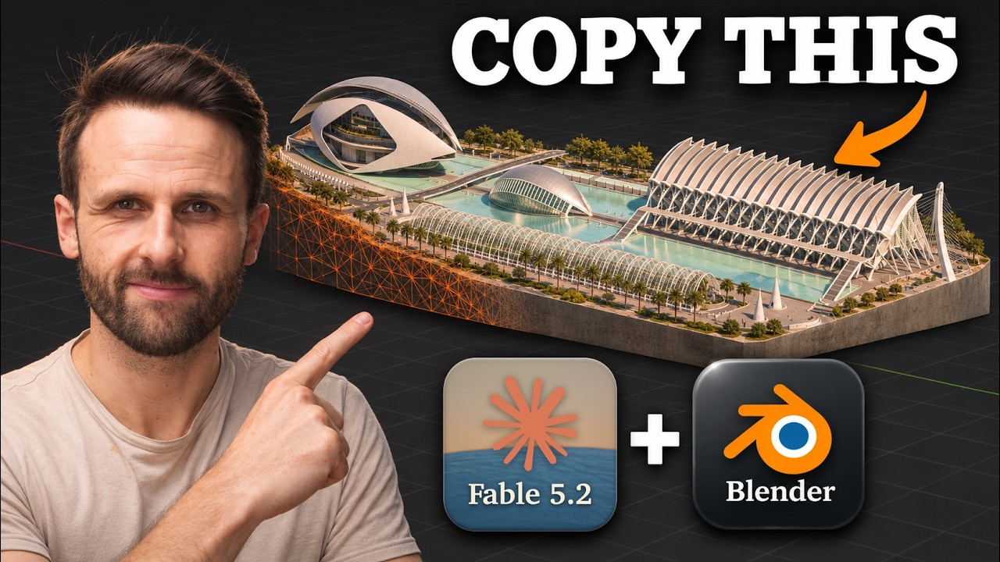 Fable 5.2 接入 Blender Pat Simmons · Fable 5.2 · 过程展示 2026-11-14 过程展示：Claude 驱动 Blender、写场景，Cycles 或云渲染出图，不是视频生成模型。另附书面教程、三份完整提示词与技能包，含静帧批评循环。尚未逐步复跑。技能包里的 Blender 5.1.2 是软件版本。 日期依据 排序仍用视频日期 2026-11-14。书面页可见 November 17, 2026，JSON-LD 为 2026-11-18 11:29 亚洲/上海，两说并存，不拿文章日期覆盖视频日期。 视频 书面教程与提示词 技能包
Python + Blender 广告 Marcus · Claude Fable 5.2 · 教程 2026-11-13 用 Claude Code 写 Python，不必亲手打开 Blender，由 Blender 在后台做出三维香水广告。教程标题写明 Claude Fable 5.2。配套 skill pack 在站外。尚未逐步复跑。 教程
Astral Realm Scott · Claude Fable 5.2 · Three.js 2026-11-13 用 Claude Fable 5.2 制作，在 Three.js 里渲染。除角色外都是程序生成。暂未找到公开教程。未审片。 原帖
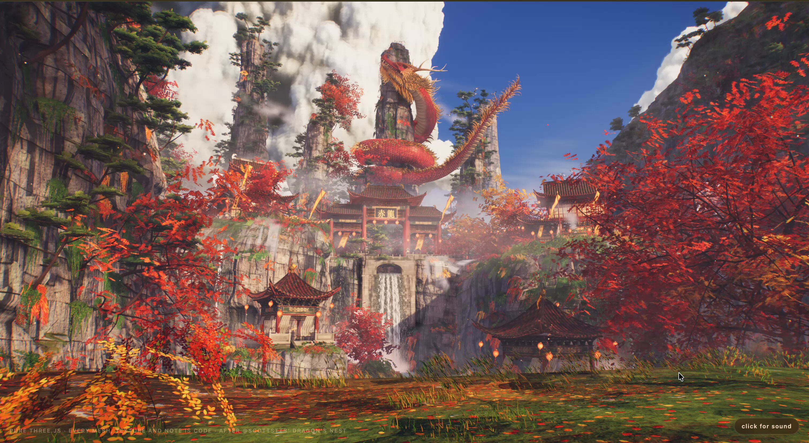 No External Assets Chetaslua · Claude Fable 5.2 · Three.js 2026-11-13 用 Claude Fable 5.2 和 Three.js 做的三维成片。作者写明成片没有外部素材。暂未找到公开教程。未审片。 原帖
文字预览，不是影片静帧。暂未找到该 BV 的公开封面，未借用其他项目的画面。 指定参考·制作细节待核实 Fable 5.2网页MOBA（制作待核） 傅盛 · 指定参考 2026-11-13 指定参考，制作细节待核实。不计入本轮 6 个已核实新项目。视频全名：这一刻我等了三年！Fable5.2手搓王者荣耀仅仅只用了一晚！页面显示 UP 主傅盛。可见发布时间是 2026-11-13 21:31:30，页面没有时区，所以只记到这一天。 2026-11-19 打开该页时，播放器需要登录。未登录，未观看。正文没有 sanwan 链接、没有 Starfall 名称，也没有 X 账号。不能据此并到别的项目，也不能把 UP 显示名以外的身份当成已经核实。模型只记作者标题标注的 Fable 5.2；制作细节待核实。工具未知，页面没有写 Blender 或 three.js。暂未找到该 BV 对应的公开教程或源码。 原视频
Painted Valley Blendi · Fable 5.2 2026-11-12 一座吉卜力手绘风格的山谷，可以走进去散步。土地、云和村庄都是代码画出来的。 Three.js 项目，非 Blender。型号依据原帖，演示页本身没写 Claude。本次检索未找到原作完整制作教程，可从源码改造入手。 打开演示 原帖 源码与改造说明
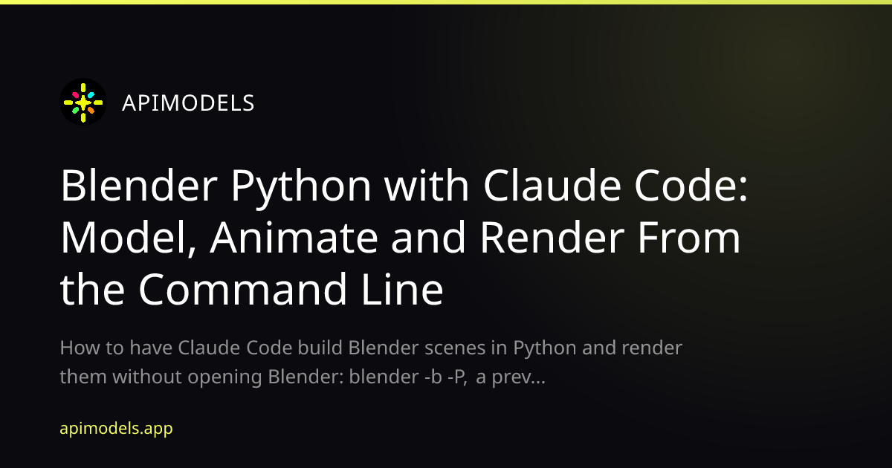 命令行 Python 出 MP4 APIMODELS · 教程 2026-11-12 命令行用 Python 驱动 Blender：先渲染几张预览图再出完整 MP4。页面写明测的是工具链，不是某一个模型。 教程
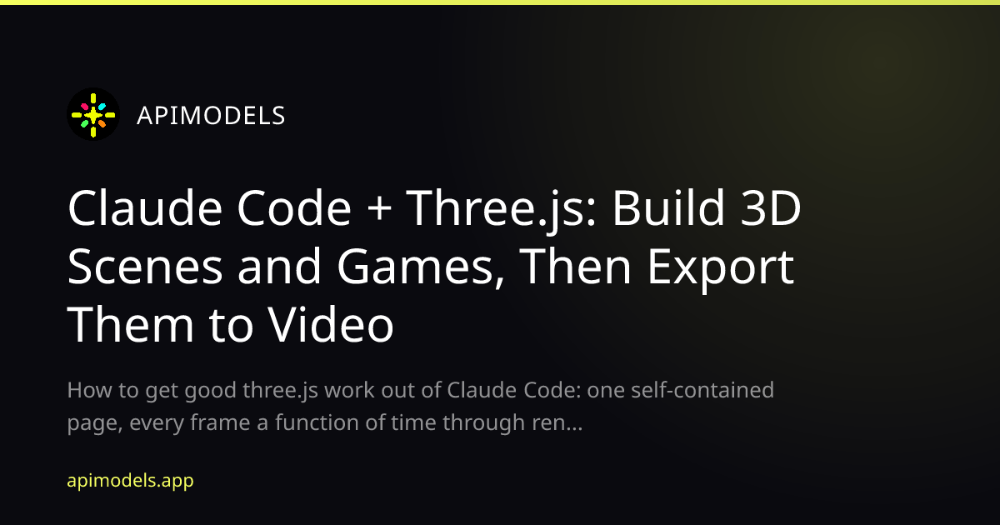 Three.js 导出视频 APIMODELS · 教程 2026-11-12 用 renderAt(t) 让 Three.js 每一帧可复现，再用 Playwright 和 FFmpeg 导出 MP4。页面写明测的是工具链，不是某一个模型。 教程
Animated Show Intro Kevin Ngo · Claude Fable 5.2 · Python + Blender 2026-11-11 Claude Fable 5.2 做的动画节目片头。画面是代码：Python 做动画，Blender 渲染。暂未找到原作完整教程。未审片。 本次检索未找到原作完整教程；此为相邻基础教学，非原作复刻，配套技能包在站外。 原帖 相邻教程：Blender广告
Blender 代码短片技能 vargHQ · 教程 2026-11-11 一份可安装的技能：用单支 Python 在 Blender 里做短片，先出静帧再渲染，最后用 ffmpeg 封装。页面把 Fable 5.2 写成可用代理之一，没有写明示例短片用的是哪一个模型。 教程 源码
CROSSTOWN Matt Shumer · Fable 5.2（作者声明） · 可玩 2026-11-11 浏览器里可以开车、开直升机或步行的早期局部城市，范围在 Flatiron 一带。不是完成的 GTA，也不是作者说的七天计划已经做完。两条帖是同一个项目：06:27 的首发演示，08:10 的实玩补证。 作者原帖写的是 Fable 5.2，帖子里没有出现 Claude 这几个字。官方型号全称是 Claude Fable 5.2。可玩页自己写明用 Blender 和 three.js 做，在 Chrome 里运行、不用安装。本板打开过这个早期局部世界，没有把它玩成一座完成的城。方法视频是作者的公开说明，简介里写了提示词和多代理循环；本板没有看完这条视频，不摘录提示词。暂未找到 GitHub 源码。 打开可玩页 首发演示 实玩补证 方法视频
90's Toy Commercial Kevin Ngo · Claude Fable 5.2 · Python + Blender 2026-11-10 Claude Fable 5.2 做的 90 年代玩具广告。画面是代码：Python 做动画，Blender 渲染。暂未找到原作完整教程。未审片。 本次检索未找到原作完整教程；此为相邻基础教学，非原作复刻，配套技能包在站外。 原帖 相邻教程：Blender广告
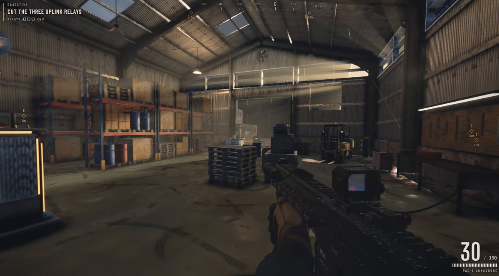 Saltline Felix Rieseberg · Fable 5.2（作者声明） · 可玩 2026-11-10 浏览器里的第一人称关卡。开始画面能看到任务、坚守、难度、Deploy 和操作说明。点 Deploy 时超时，所以没有测到进入后的玩法。原帖日期仍是 2026-11-10 06:50:32（亚洲/上海）。没有单独的修改完成时间，不把日期改晚。 作者原帖写的是 Claude Fable 5.2 一次生成、当时没有人工反馈。页面上 Felix 的署名说明接着写：那次实验之后，他又花了两个小时改武器模型、声音和玩法。现在打开的可玩页是作者改过的演示，不是那次完全没动过的一次生成。页面链到一次生成的版本，本板没有记下那个确切地址，所以这里不放。页面自己说表面、机器和声音是在浏览器里生成的。提示词在作者回复里。第三方镜像不当作原仓库。 打开现可玩页 原帖 提示词回复
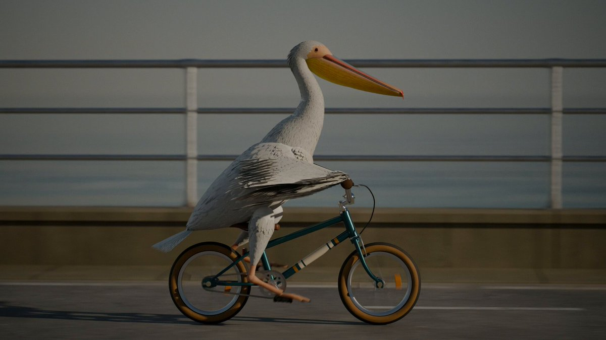 Pelican on a bicycle TechFriendAJ · Claude Fable 5.2 · Python + Blender 2026-11-10 名称来自作者技术说明里的描述，不是另行公布的正式片名。约 18.5 秒。作者回复写明 Claude Fable 5.2 在 Claude Code 里写 Python：绑定、几何、自行车连杆和五个镜头。 Blender 5.2.3 是软件版本，用 Cycles OptiX 渲染，ffmpeg 出片。用了 PolyHaven 的 CC0 天空和地面，不是无外部素材。公开的 agent trace 能看迭代，但不是已独立验证的逐步教程。未审片，也未把 trace 逐条跑通。 原片 技术说明 迭代记录
Portals Ethan Mollick · Claude Fable 5.2 · 471 个世界 2026-11-10 一场不用操作的飞行。作者原帖写让 Fable 5.2 来做；Claude 写代码和世界，three.js 在浏览器里现场生成场景。门里已经是下一个世界，没有剪辑，也没有淡入淡出。未玩完 471 个世界。 打开演示 源代码 原帖
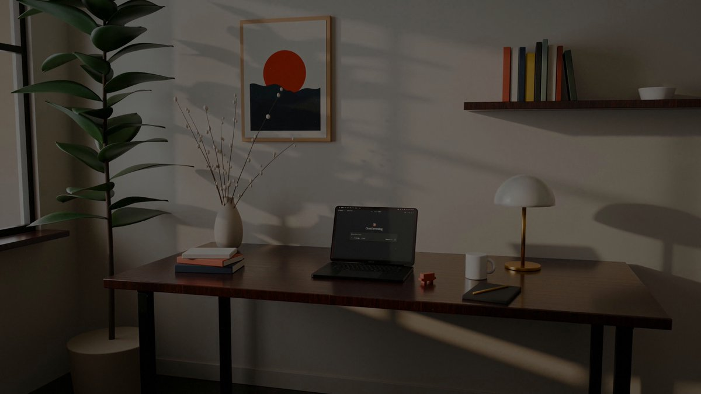 The Edge Riley Brown · Fable 5.2（作者声明） · 案例 2026-11-10 2026-11-10 的 59 秒、13 镜短片，和 11 月 15 日那部 52 镜的 The Fable of Clawd 不是同一部。原帖正文没有短标题；The Edge 来自制作说明页的标题。画面仍用原帖官方封面，点图进原帖。 制作说明页已经直接读过，标题是 The Edge Making-Of，正文是 How The Edge was made。提示记在 Riley Brown 的一条消息和 claude-fable-5-2 上。作者原帖写 Fable 5.2，没有把 Claude 三个字写进那句声明；说明页用的是 claude-fable-5-2。流程是：HTML / three.js 做屏幕和世界，Python 在 Blender 里做场景和动画，Cycles OptiX 在 RunPod 上渲染，再做调色、字幕和声音。署名是 Claude Fable 5.2、两个代理（应用屏幕和 three.js 世界），以及 ElevenLabs 的配乐和声音。页面没有下载按钮，只列出 211MB 的 MP4 和 1.13GB 的母带，不是可下载源码。分镜里有打字、Clawd 回来、过夜搭建渲染和日出。制作说明已直接核对，本板没有复跑。 原片 制作说明
纯代码长片 Matt Shumer · Fable 5.2（作者声明） · 案例 2026-11-10 没有正式片名。作者原话是用纯代码做完整部片子，Voices, graphics, everything。他自己当时也写了还没看。和 CROSSTOWN 不是同一个项目。平台给出的媒体时长约 49 分钟，那是元数据，不是本板的审片结论。封面几乎全暗，不是看过之后截的画面。 作者声明到 Fable 5.2 和纯代码为止，原帖没有写 Claude 这三个字。官方型号全称是 Claude Fable 5.2。没有写具体的渲染器、视频引擎或音频引擎，这里也不补。暂未找到源码或教程。已核实的是作者自己的说法，不是独立跑通的制作流程。 原帖
Welcome Fable 5.2, creator of worlds Jeremy Berman · Fable 5.2（作者声明） · 案例 2026-11-10 标题用作者原帖里的原句，不是另起的片名。画面是史前水坑。作者回复写：用 Fable 写 Python 去控制 Blender，从零做起。原帖欢迎的是 Fable 5.2，回复里写的是 Fable，两处都没有把 Claude 三个字写进那句话。官方型号全称是 Claude Fable 5.2。 平台给出的时长约 18.3 秒，是元数据。本板没有看片。没有写许可证，也没有作者自己的公开教程或仓库。暂不把别人的综述当成这部的教程。 原帖 制作回复
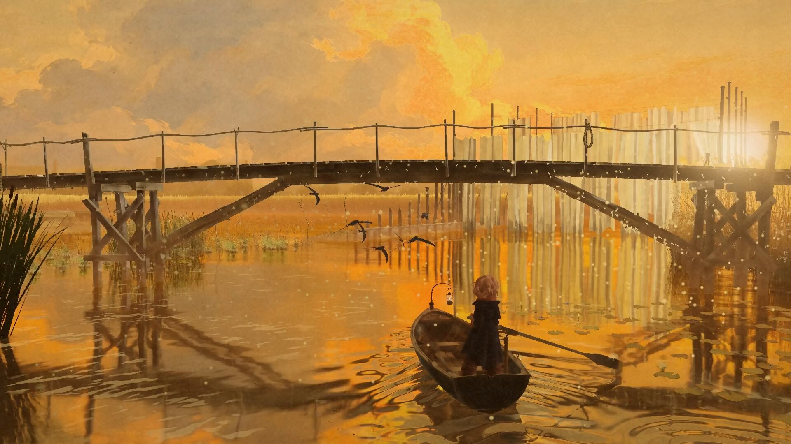 What the water keeps Kevin Ngo · 可在浏览器里玩 2026-11-10 坐船穿过 8 个梦境世界。作者原帖写明由 Claude Fable 5.2 做成，画面在网页里当场画出来。演示页本身没写型号。暂未找到公开教程。未审片。 打开演示 原帖
Claude Code 接入 Blender Allen Anant Thomas · 教程 · 相邻接线 2026-11-08 逐步把 Claude Code 接到 Blender，并用技能包搭一场小场景。作者只写了 Claude Code，没有写 Fable 或 Opus；文中的 5.2 是 Blender 软件版本。 教程
The Moss Keeper Chetaslua · 单文件 HTML · 作者称 Fable 5.5 2026-11-02 苔藓巨人与森林的代码动画短片：日出时，长满苔藓的巨人在遗忘的森林里醒来。学习用代码组织绘画质感、场景和镜头。 作者原帖和仓库写 Made with Fable 5.5。2026-11-18 核对的官方型号表没有 Claude Fable 5.5，不能改记成 Fable 5.2，也不能当成已核实的官方型号。 打开演示 源代码 原帖
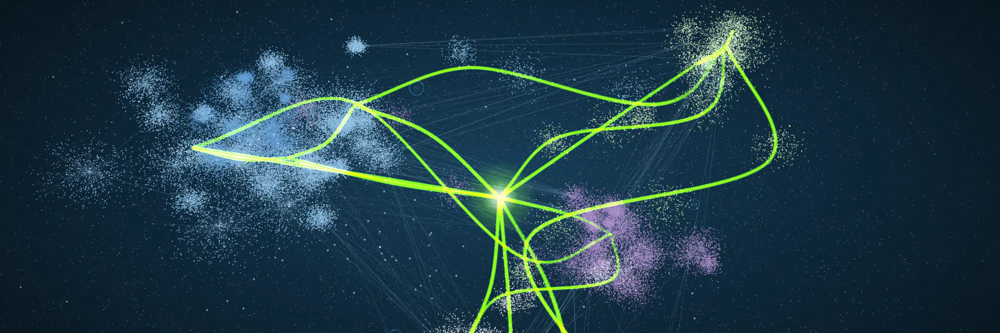 Navigating Complex Legal Documents at Scale Ayushman Dash · Claude Opus 5.5 · 补充遗漏 2026-10-28 补充近 30 天里漏掉的一条，不是最近三天的新作。日期只精确到 2026-10-28。作者写这是给 Jus Mundi 做的说明片：一个约 326KB 的 HTML，用时间函数和 three.js 出画，再用 Playwright 和 ffmpeg 导出。旁白和音乐来自 ElevenLabs。博客里放了作者的 720p MP4。暂未找到可公开打开的原 HTML 演示。 作者说成片约 5 分 35 秒、65 个场景。本板没有看片，不把这句话写成已审结论。点图打开的是博客里的成片地址。 制作说明 成片
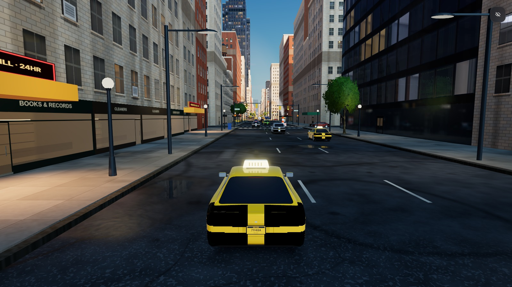 Slop New York mrdoob · 历史条目 2026-10-22 打开网页时，曼哈顿的街道、立面和车流在浏览器里现场生成，不靠提前存好的照片。历史条目，尚未核实 Claude 参与。作者原帖写的是压缩后约 784KB。 打开演示 源代码 原帖
JavaScript 逐帧 Chase AI · 教程 2026-10-07 用 Claude Code 写 JavaScript 逐帧画完，再用 Playwright 和 FFmpeg 拼成视频。Claude，具体版本未披露。未看视频。 教程 技能包